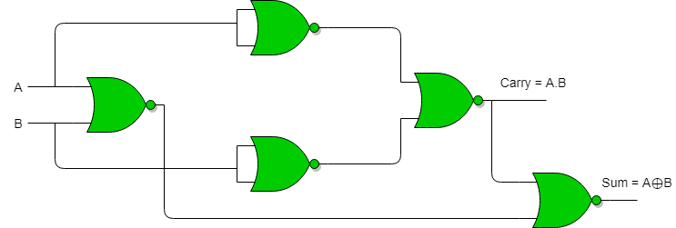
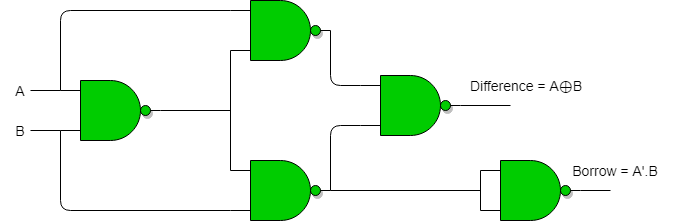
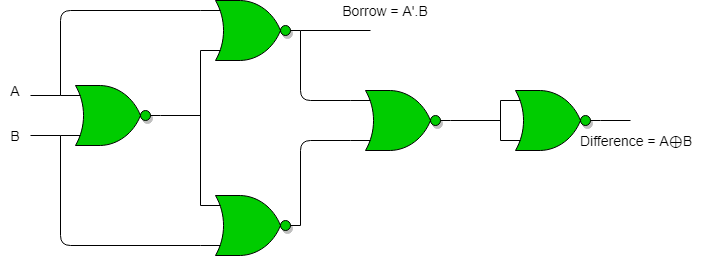

Implementation of Half Adder using NAND gates :
Total 5 NAND gates are required to implement half adder.

Implementation of Half Adder using NOR gates :
Total 5 NOR gates are required to implement half adder.

Implementation of Half Subtractor using NAND gates :
Total 5 NAND gates are required to implement half subtractor.

Implementation of Half Subtractor using NOR gates :
Total 5 NOR gates are required to implement half subtractor.
